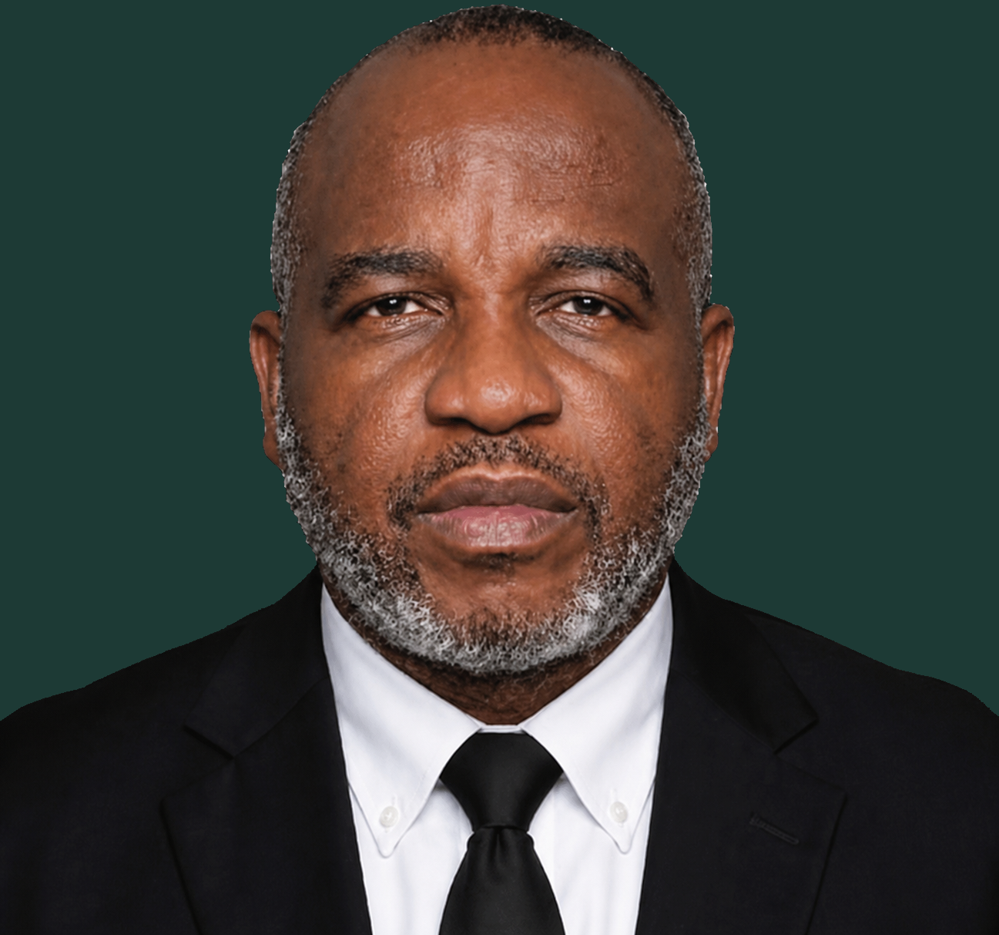

Anthony Nwachukwu Nwokoro
CHAIRMAN / CHIEF EXECUTIVE OFFICER (CEO)
A distinguished construction, infrastructure, and energy executive whose career of over 25 years reflects an unwavering commitment to strategic leadership, operational excellence, and measurable commercial impact.
MoreLess
Anthony Nwachukwu Nwokoro is a distinguished construction, infrastructure, and energy executive whose career of over 25 years reflects an unwavering commitment to strategic leadership, operational excellence, and measurable commercial impact. Across boardrooms, construction sites, and energy facilities, he has consistently demonstrated the ability to translate complex challenges into tangible outcomes, earning his place among the most respected figures in Nigeria’s built environment and energy sectors.
At the core of Anthony’s corporate career is his role as Executive Director and Chief Operating Officer of Stefanutti Stocks Hapel Ltd, a high-profile joint venture between Stefanutti Stocks SA, one of South Africa’s foremost publicly listed construction groups, and Hapel Nigeria Limited. In this capacity, he carries full responsibility for strategic direction, operational performance, and corporate governance across the company’s Nigerian operations. His most defining contribution remains his role as Chief Negotiator in the landmark merger between Stefanutti Stocks SA and Hapel Nigeria Limited, a cross-border, multi-jurisdictional transaction that he led from strategy to conclusion with exceptional commercial precision and stakeholder diplomacy. Under his leadership, the company has overseen project portfolios exceeding USD 20 million, directed a workforce of over 500 employees, and secured high-value contracts across government, parastatal, and private sector segments.
Anthony also serves as the Chairman / Chief Executive Officer (CEO) of Verte Energies Limited, a fully indigenous Nigerian energy and engineering company headquartered in Abuja, incorporated under CAMA 2020 and fully compliant with the Nigerian Oil and Gas Industry Content Development (NOGICD) Act. The company delivers integrated solutions across oil and gas services, engineering, procurement, construction and maintenance (EPCM), civil and structural engineering, marine inspection, and laboratory testing, operating in accordance with ISO 9001, ISO 14001, and ISO 45001 standards. At Verte Energies, Anthony leads with a governance model built on transparency, ethical conduct, and a long-term vision to become a pan-African brand synonymous with engineering excellence, innovation, and sustainability.
Beyond his corporate roles, Anthony is the Founder and Chief Executive Officer of Ver-amount Construction Ltd, a luxury residential development and estate construction firm serving Nigeria’s premium property market, and of Tile Gallery Nigeria Ltd, a specialist enterprise focused on the sourcing, supply, and contracting of premium natural stone and luxury tiling products for high-end residential, commercial, and hospitality projects. Together, these ventures reflect his deep understanding of the construction value chain and his ability to build complementary businesses of lasting commercial value.
Anthony holds a Bachelor’s degree in Management from the University of Nigeria, Nsukka. His academic grounding, combined with decades of applied executive experience across multinational construction and indigenous energy enterprises, has shaped a leader of exceptional breadth. He is a strategist, a negotiator, and a builder in every sense, whose contributions to Nigeria’s infrastructure and energy landscape continue to define the standard for executive leadership in the sector.